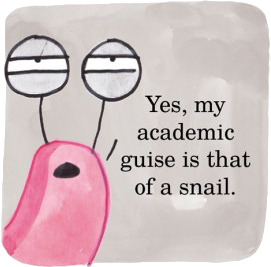

How Wimmelbooks Work: A Snail’s Guide
Elys Dolan | Cambridge School of Art, Anglia Ruskin University, United Kingdom
Art Reviews in Comic Form
Coco Picard | Independent Artist
Postmodernism: Visualizing a Movement
This Is Not Marilyn: The Dailies
Chris Gavaler | Washington and Lee University
The Popular as Postmodern in Michael Moorcock’s Early Work
Nicolas Labarre | University Bordeaux Montaigne, France
Resurfacing
Oriana Gatta | Indiana University of Pennsylvania
Comics, the Postmodern, and the Magical Real
Paul Davies | University of Sussex
The Classical Side of Post-Modern Architecture: The Jacksonville, FL Public Library
David Allan Duncan and Stephen Wagner | Savannah College of Art and Design
Polysemy Express
Michael Chaney | Dartmouth College
Issue 1
Postmodernism: Visualizing a Movement
Website design and layout by Kenny Anderson and Jason Crider